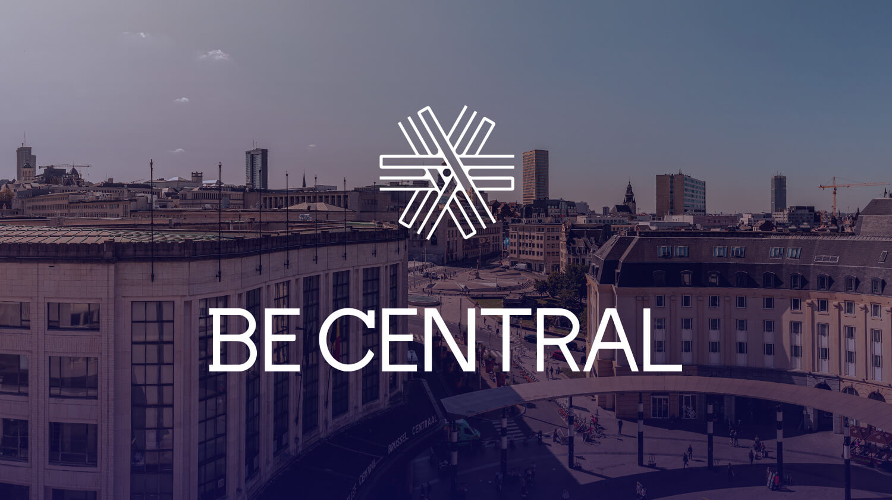

VReal: Transforming Event Management, One Innovation at a Time
In 2024, VReal was born from the harmonious blend of expertise in event management and a shared passion for digital technologies. At a time when innovations are profoundly transforming the industry, our founding team seized the opportunity to redefine the experience for organizers and participants alike.
From the outset, an ambitious goal was set and continues to drive the VReal team today: to build a simple, reliable, and intuitive product that enhances the experience for even the most demanding organizers and participants.
The journey that followed is a beautiful story that continues to unfold every day, with its share of challenges and new achievements. We remain attentive to our clients, constantly improving our product to address the event management needs of tomorrow.
“Transform your vision into…virtual reality.”


Based in the Heart of Brussels: Where Ideas Thrive
VReal has set up shop at BeCentral, right in the heart of Brussels. In our space, we share a cafeteria with a kitchen and several coworking areas with other inspiring entrepreneurs. This vibrant exchange of ideas fuels us every day! And if the weather permits, just steps away, we often meet at the Mont des Arts garden to enjoy a sandwich from Tonton Garby.
Working in a start-up means having the chance to actively contribute to an innovative project alongside a team driven to make a difference! At VReal, we work in an open-space setting because we believe that human connection is essential for progress.
Our work culture is relaxed yet focused, serious without taking itself too seriously, fostering kindness and shared knowledge. Here, every member of the team—whether an intern or an employee—makes meaningful contributions through initiatives, regular brainstorming sessions, and collaborative efforts.
We also host a TakeTalk every day after lunch, where anyone can share their latest adventures or discuss a topic of their choice.
As you can see, life at VReal is diverse and dynamic, rich in connections, purpose, and learning. And on top of that, the work environment is simply ideal!